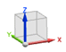

绝对坐标系是模型空间中的概念性位置和方向。将绝对坐标系视为 X = 0, Y = 0, Z = 0。它是不可见的，且不能移动。
因为这个坐标系是一个固定的坐标系，NX 模型空间中每个对象的方向和位置都是相对于它的原点。
绝对坐标系(或绝对 CSYS)也提供了部件文件间的公共参考。这就表示，如果两个零件中的两个对象都位于 X=1, Y=1, Z=1，它们的位置则是相同的。
视图三重轴是一个视觉指示符，表示模型绝对坐标系的方位。视图三重轴显示在图形窗口的左下角。它为空间中的模型提供了方向上的参考。

要显示视图三重轴，可选择首选项→可视化→视图/屏幕，然后选中显示视图三重轴复选框。